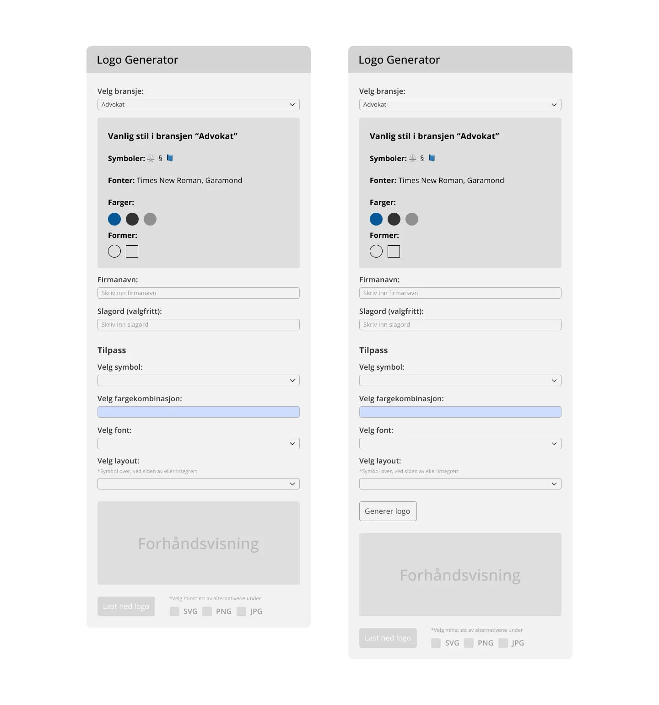
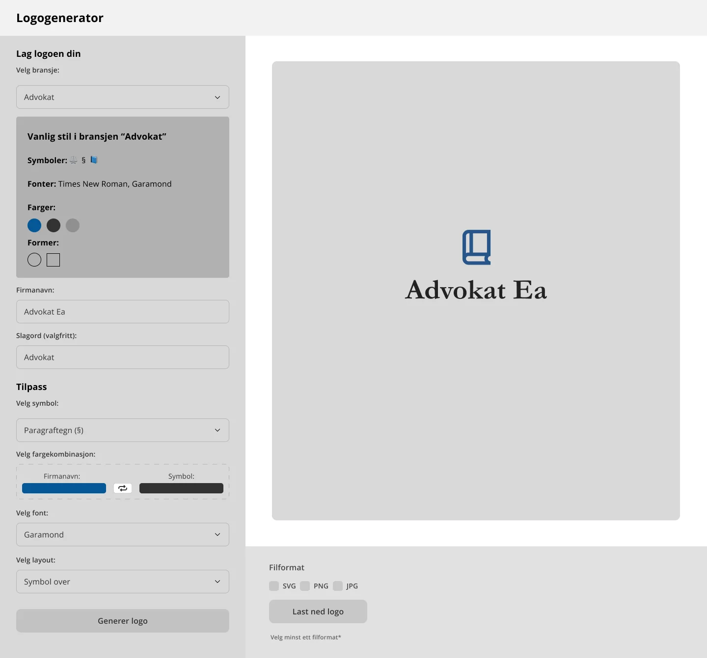
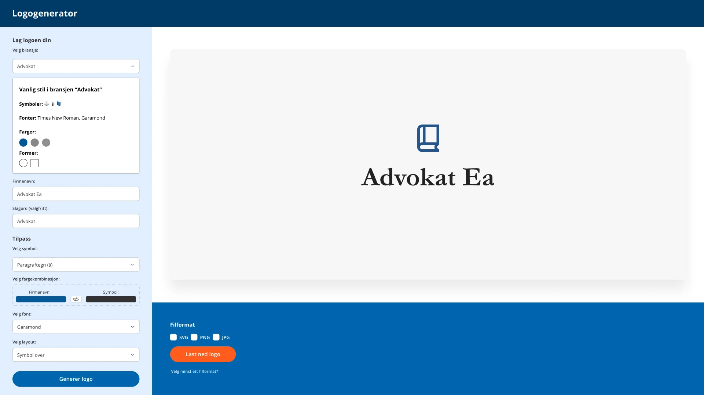

Bransje
Advokat
Symboler: vekt, §, dommerklubbe, lovbok
Fonter: Merriweather, Garamond, Baskerville
§
Advokat Ea
Selected work — Product design
Hvordan et skalerbart designsystem kunne gi tusenvis av småbedrifter en visuell identitet, og hvorfor den teknologiske utviklingen endret behovet underveis.
01 — Utfordringen
For småbedrifter, enkeltpersonforetak og oppstartsbedrifter er profesjonell logodesign ofte utenfor både budsjett og prioritering — resultatet er tomme profiler som gir mindre tillit og lavere klikk.
Spørsmålet ble: kan vi gjøre god designpraksis til et selvbetjent verktøy? Ikke en generisk logomaskin, men en generator der hvert valg allerede er kvalitetssikret av en designer.
02 — Konseptet
I stedet for å gi brukeren et blankt lerret, tar generatoren utgangspunkt i bransje. Hver bransje har et forhåndsdefinert sett med symboler, farger, former og fonter — kuratert slik en designer ville gjort det. En advokat får paragraftegn, dype blåtoner og klassiske seriffer. En pizzarestaurant får noe helt annet.
Det gjør prosessen raskere, mer kostnadseffektiv og — viktigst — konsistent. Brukeren velger innenfor trygge rammer, og kan ikke ende opp med Comic Sans i rosa.
Dropdown eller ikonbasert grid. Valget låser det kuraterte stilsettet.
Symboler, fargeprøver og fontnavn vises umiddelbart — brukeren ser bransjens formspråk.
Navnet skrives inn og blir en del av logoen. Slagord er valgfritt.
Symbol (3–5 forslag), fargekombinasjon, font og layout — symbol over, ved siden av eller integrert.
Logoen genereres og vises fortløpende, direkte mot kundens oppføring.
Eksport i SVG, PNG og JPG — klar til nettside, skilt og sosiale medier.
03 — Systemet bak
Symbolene hentes fra åpne ikonbiblioteker med tydelige lisenser — Heroicons, Feather, Tabler, Lucide — og fontene fra Google Fonts. Det holder verktøyet fritt for lisensfeller og enkelt å vedlikeholde.
Bransje
Symboler: vekt, §, dommerklubbe, lovbok
Fonter: Merriweather, Garamond, Baskerville
Bransje
Symboler: solcelle, vindmølle, vannkraft, lyspære
Fonter: Exo, Verdana, Ubuntu
Bransje
Symboler: gaffel, kniv, tallerken, kopp
Fonter: Baskerville, Lora, Merriweather
04 — Struktur
Før jeg begynte å designe det visuelle grensesnittet, utforsket jeg hvordan en enkel arbeidsflyt kunne hjelpe små bedrifter med å generere en logo uten designkunnskap.


05 — Fra wireframe til flate
Målet var ikke å generere tilfeldige logoer, men å bygge et system som kombinerte bransjetilpassede symboler, fonter og farger for å sikre et konsistent resultat.
Desktop 1920 px

06 — Resultat og læring
Konseptet ble ikke prioritert for videre utvikling. En viktig årsak var at generative AI-verktøy på dette tidspunktet gjorde det mulig for brukere å lage egne logoer utenfor plattformen.
Arbeidet ga likevel verdifull innsikt i hvordan nye teknologier kan påvirke produktstrategi, og hvor viktig det er å vurdere langsiktig differensiering og forretningsverdi i tidlig konseptutvikling.
En annen utfordring som dukket opp underveis var hvordan man kunne håndtere et begrenset ikonbibliotek. Dersom flere bedrifter velger samme symbol, kan logoene oppleves som mindre unike. Konseptet var derfor ikke ment å erstatte skreddersydd design, men å gi bedrifter uten visuell identitet et godt utgangspunkt gjennom bestemte symboler, fonter, farger og layoutvalg.